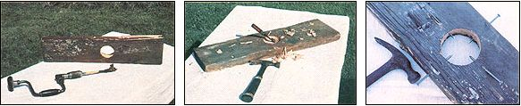
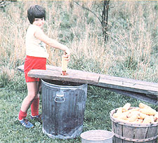

There's more than one way to skin a cob: by hand (ouch!), by costly machine, or by using . . .
Many years ago, when I first kept chickens, I found myself running low on poultry feed. . . and short on cash. Luckily for me, though, a farmer down the road had a cornfield that was so mucky he couldn't get into it with his tractor, and - rather than let the crop go to waste - he offered to let me handpick what I wanted for $1.00 per bag . . . regardless of the size of the sacks used!
So, knowing a real bargain when I see one, I promptly "volunteered" all available family members for corn-harvesting duty. We picked the dried-on-the-stalk ears in the sun and in the rain . . . we picked when it was so cold that ice covered the puddles in the tractor-tire ruts . . . we even picked with snow on the ground and after the earth turned to mush the following spring.
Obviously, we got more than enough chicken feed, and - even more obviously - most of our spare time that winter was spent husking and shelling. (Fortunately, corn keeps best on the cob, so we were able to shell it as we needed it.)
THERE ARE EASIER WAYS
I must say, it sure would have been nice to buy and use a corn Sheller that year. At the time, both Montgomery Ward and Sears sold models that could be clamped onto the side of a barrel and - according to catalog descriptions - would process 14 bushels an hour. (I personally have grave doubts about achieving any such production rate. The machine can probably stand up to the task, if you can turn the handle fast enough . . , but should you actually push yourself that hard the first hour, you'll likely be too tired to shell any corn the following hour!) In those lean times, though, I simply didn't have the $25 required to make such a purchase . . . and today the same shelters cost $60 to $65!
So we processed our chicken-feed bonanza all by hand. To do this, you simply grasp a dry ear of corn horizontally in front of you (as if it were the handle of a lawn mower) and, while holding it over a container of some kind, twist your hands back and forth. The kernels will be rubbed from the cob and fall into the bucket . . . right along with tiny flecks of skin scraped painfully from your palms and fingers. (If your hands are in shape, they won't get sore until you're into the third bushel. If not, I hope you have a good remedy for blisters.)
Over the years, my wife and children and I have shelled literally hundreds of bushels of corn by this method. But (and here's the good news) I've finally come up with a better way . . . a no-cost, 30-minutes-to-build, it-really-works, no-moving-parts corn sheller! Now my invention can't compete with a factory-made model, but the device does make the job much easier than it was with the two-fisted method! And as is true of many successful tools, the key to its efficiency is simplicity.
AND HERE IT IS!
My homemade sheller is just a board with a large hole in it, around which four nails have been driven - at 12, 3, 6, and 9 o'clock positions - at such an angle that their points protrude an inch or so inside the circle. You simply insert a dried ear of corn in among the spikes and twist it. The sharp ends scrub the kernels off the cob and into the container ... while your skin stays on your hands where it belongs! [EDITOR'S NOTE: For some ideas on how to utilize those cleaned corncobs, see page 10 in this issue.]
Although the model shown here is just a "one-holer", a row of three or four openings of different diameters works best, as they will accommodate a full range of ear sizes. The largest in the series needs to be about 3" across, with the inner circle (described by the nail points) slightly bigger than the perimeter of your fattest cobs.
Assuming you can find a board (a short length of 2 X 6 works perfectly) and some nails (20-penny common will be ideal), the most complicated step in building the device will be making the holes in the board. A brace with an expansive bit works fine for this, but if you don't already own such tools, they may cost more to purchase than would a corn sheller. I used a chisel to excavate the hole (the job took about half an hour) . . . and I suspect that a coping, keyhole, or compass saw would work OK, too. In any case, remember that the cavity doesn't have to be pretty, or even perfectly round . . . its sole function, after all, is simply to create a frame for the nail points.
In my experience (and I've had a lot of it!), a full hour is required to shell a bushel of corn by hand. And even with my homemade shelter (which is free. . . don't forget that!), the task takes 40 minutes. Perhaps that's no great shakes compared with the performance of store-bought machines . . . but before writing this article, I processed a bushel by the old twohanded method just to refresh my memory and to get an accurate idea of the time required. And I was mighty tempted to cheat a little bit . . . to reach over and do just a few ears on the homemade sheller! Need I say more?
|
 Photos by the Author LEFT: The latest in homemade corn shellers. CENTER: An expansive bit is useful, but the tool purchased new may cost more than a shelly would. RIGHT: The primitive product really does the job. |
 You can chisel a hole in a half-hour. |
|